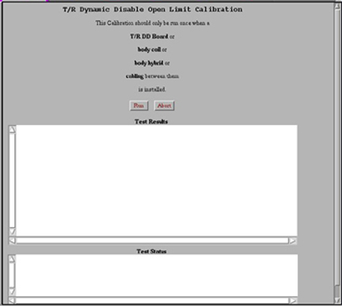

Note: Restricted Service tools available to GE Field Service. Make sure your service key is installed.
To start the TR Dynamic Disable Calibration, select Calibration Wizard from the calibration menu and select Click here to start this tool.
Once the Calibration Wizard starts, select TR Dynamic
Disable Calibration from the menu, review and confirm
the pre & post-dependencies, and then select Click
here to start this tool.
If you are unable to start the Restricted Service tools, use
the non-proprietary method:
From the Common Service Desktop, select Calibration.
From the Calibration menu, select TR Dynamic Disable
Calibration.
Select Click here to start this tool to
start the procedure with the non-proprietary service tools.
Figure 1. TR dynamic disable open limit calibration

Once the calibration is complete, the results will display in
the Test Results text area.